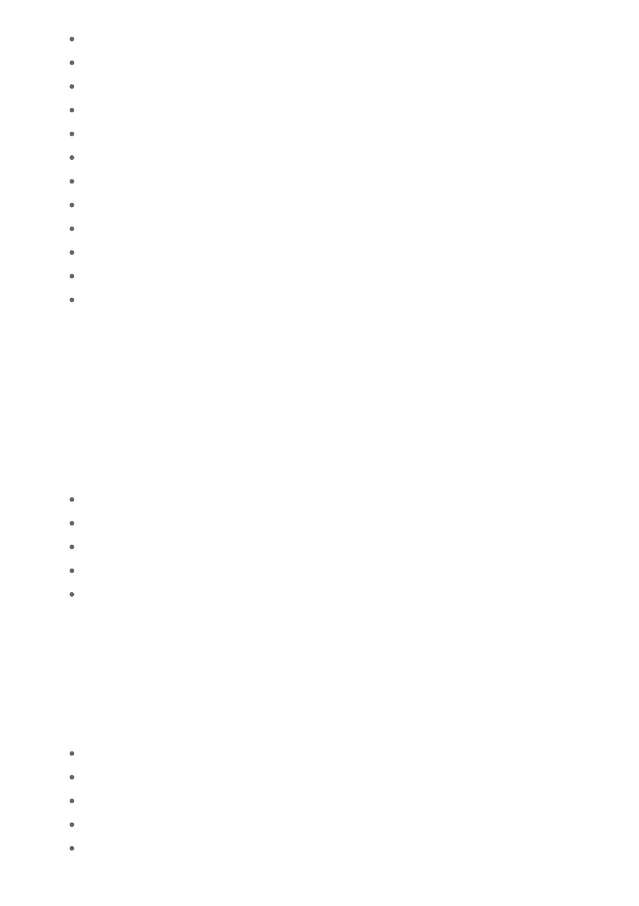

Stephen Fridey – Preparing for Varroa and spring management (July 2025)
Kris Fricke – Insights from The Australasian Beekeeper and his visit to Ghana (July 2025)
Cormac Farrell – Urban beekeeping and rooftop apiaries (Sept 2025)
Bruce Ward – American Foulbrood
Kris Fricke & Stan Filippis – Apimondia overview (Oct 2025)
Bruce Ward – AFB (Oct 2025)
Dr Kenya Fernandes – Healthy forests, healthy bees and active honey (Nov 2025)
Carmel Gerdesen – Bee Bingo (Dec 2025)
Lindsay Callaway – Honey Fighting Fund update (Feb 2026)
Adam Maxwell – National Bee Pest Surveillance Program (April 2026)
Dr Scarlett Howard – Bee intelligence, cognition and pollination (May 2026)
Sarsha Manuel – Black Beech Honey (June 2026)
While we are fortunate to attract outstanding guest speakers, we should never underestimate the
value of the knowledge within our own membership. Many members stood at the front of the room
this year to share their experiences, successes, failures and lessons learned. These presentations
are often just as valuable as those delivered by industry experts. I also want to acknowledge the
volunteers; Helmut Woerner, Scott Denno, Sue Moritz, Stephen Fridey, John Bemelmans and Bruce
Ward, who continue to support our monthly Ask a Beekeeper sessions. Their willingness to answer
questions, mentor newer members and share practical knowledge is a cornerstone of what makes
this club special.
Community engagement remained one of the most rewarding aspects of our year. Committee
members and volunteers represented the club at:
Royal Geelong Show (Oct 2025)
Le Festival Français (Oct 2025)
Ceres Makers Market (Nov 2025)
Bunnings events (Torquay, Sept 2025 & Waurn Ponds, July 2026)
The Heights Heritage House & Garden Autumn Fair (3 May 2026)
These events help raise awareness of beekeeping and allow us to connect directly with the public,
promoting the importance of bees and pollinators.
In September 2025, most of our committee travelled to the Ballarat Regional Beekeepers Club to
hear Mike Allerton speak about Varroa. It was a pleasure to visit another club that shares our
passion and to strengthen ties between our organisations.
Our volunteers also continued engaging with community groups across the region, delivering
presentations to:
Bellarine Retirement Village (Sept 2025)
Torquay Zeally Bay Probus Club
Geelong Day VIEW Club (Feb 2026)
Portarlington Probus Club ( May 2026)
Belmont Grange Nursing Home (May 2026)